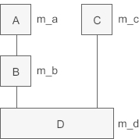

C++将派生类赋值给基类（向上转型）
在 C/C++ 中经常会发生数据类型的转换，例如将 int 类型的数据赋值给 float 类型的变量时，编译器会先把 int 类型的数据转换为 float 类型再赋值；反过来，float 类型的数据在经过类型转换后也可以赋值给 int 类型的变量。
数据类型转换的前提是，编译器知道如何对数据进行取舍。例如：
类其实也是一种数据类型，也可以发生数据类型转换，不过这种转换只有在基类和派生类之间才有意义，并且只能将派生类赋值给基类，包括将派生类对象赋值给基类对象、将派生类指针赋值给基类指针、将派生类引用赋值给基类引用，这在 C++ 中称为向上转型（Upcasting）。相应地，将基类赋值给派生类称为向下转型（Downcasting）。
向上转型非常安全，可以由编译器自动完成；向下转型有风险，需要程序员手动干预。本节只介绍向上转型，向下转型将在后续章节介绍。
Class A: m_a=10
Class B: m_a=66, m_b=99
----------------------------
Class A: m_a=66
Class B: m_a=66, m_b=99
本例中 A 是基类， B 是派生类，a、b 分别是它们的对象，由于派生类 B 包含了从基类 A 继承来的成员，因此可以将派生类对象 b 赋值给基类对象 a。通过运行结果也可以发现，赋值后 a 所包含的成员变量的值已经发生了变化。
赋值的本质是将现有的数据写入已分配好的内存中，对象的内存只包含了成员变量，所以对象之间的赋值是成员变量的赋值，成员函数不存在赋值问题。运行结果也有力地证明了这一点，虽然有
将派生类对象赋值给基类对象时，会舍弃派生类新增的成员，也就是“大材小用”，如下图所示：

可以发现，即使将派生类对象赋值给基类对象，基类对象也不会包含派生类的成员，所以依然不同通过基类对象来访问派生类的成员。对于上面的例子，a.m_a 是正确的，但 a.m_b 就是错误的，因为 a 不包含成员 m_b。
这种转换关系是不可逆的，只能用派生类对象给基类对象赋值，而不能用基类对象给派生类对象赋值。理由很简单，基类不包含派生类的成员变量，无法对派生类的成员变量赋值。同理，同一基类的不同派生类对象之间也不能赋值。
要理解这个问题，还得从赋值的本质入手。赋值实际上是向内存填充数据，当数据较多时很好处理，舍弃即可；本例中将 b 赋值给 a 时（执行
下面的代码实现了这种继承关系：
Class A: m_a=4
Class B: m_a=4, m_b=40
Class C: m_c=400
-----------------------
pa=0x9b17f8
pb=0x9b17f8
pc=0x9b1800
pd=0x9b17f8
本例中定义了多个对象指针，并尝试将派生类指针赋值给基类指针。与对象变量之间的赋值不同的是，对象指针之间的赋值并没有拷贝对象的成员，也没有修改对象本身的数据，仅仅是改变了指针的指向。
pa 本来是基类 A 的指针，现在指向了派生类 D 的对象，这使得隐式指针 this 发生了变化，也指向了 D 类的对象，所以最终在 display() 内部使用的是 D 类对象的成员变量，相信这一点不难理解。
编译器虽然通过指针的指向来访问成员变量，但是却不通过指针的指向来访问成员函数：编译器通过指针的类型来访问成员函数。对于 pa，它的类型是 A，不管它指向哪个对象，使用的都是 A 类的成员函数，具体原因已在《C++函数编译原理和成员函数的实现》中做了详细讲解。
概括起来说就是：编译器通过指针来访问成员变量，指针指向哪个对象就使用哪个对象的数据；编译器通过指针的类型来访问成员函数，指针属于哪个类的类型就使用哪个类的函数。
这非常出乎我们的意料，按照我们通常的理解，赋值就是将一个变量的值交给另外一个变量，不会出现不相等的情况，究竟是什么导致了 pc 和 pd 不相等呢？我们将在《将派生类指针赋值给基类指针时到底发生了什么？》一节中解开谜底。
修改上例中 main() 函数内部的代码，用引用取代指针：
Class A: m_a=4
Class B: m_a=4, m_b=40
Class C: m_c=400
ra、rb、rc 是基类的引用，它们都引用了派生类对象 d，并调用了 display() 函数，从运行结果可以发现，虽然使用了派生类对象的成员变量，但是却没有使用派生类的成员函数，这和指针的表现是一样的。
引用和指针的表现之所以如此类似，是因为引用和指针并没有本质上的区别，引用仅仅是对指针进行了简单封装，读者可以猛击《引用在本质上是什么，它和指针到底有什么区别》一文深入了解。
最后需要注意的是，向上转型后通过基类的对象、指针、引用只能访问从基类继承过去的成员（包括成员变量和成员函数），不能访问派生类新增的成员。
数据类型转换的前提是，编译器知道如何对数据进行取舍。例如：
int a = 10.9;
printf("%d\n", a);
输出结果为 10，编译器会将小数部分直接丢掉（不是四舍五入）。再如：
float b = 10;
printf("%f\n", b);
输出结果为 10.000000，编译器会自动添加小数部分。类其实也是一种数据类型，也可以发生数据类型转换，不过这种转换只有在基类和派生类之间才有意义，并且只能将派生类赋值给基类，包括将派生类对象赋值给基类对象、将派生类指针赋值给基类指针、将派生类引用赋值给基类引用，这在 C++ 中称为向上转型（Upcasting）。相应地，将基类赋值给派生类称为向下转型（Downcasting）。
向上转型非常安全，可以由编译器自动完成；向下转型有风险，需要程序员手动干预。本节只介绍向上转型，向下转型将在后续章节介绍。
向上转型和向下转型是面向对象编程的一种通用概念，它们也存在于 Java、C# 等编程语言中。
将派生类对象赋值给基类对象
下面的例子演示了如何将派生类对象赋值给基类对象：#include <iostream> using namespace std; //基类 class A{ public: A(int a); public: void display(); public: int m_a; }; A::A(int a): m_a(a){ } void A::display(){ cout<<"Class A: m_a="<<m_a<<endl; } //派生类 class B: public A{ public: B(int a, int b); public: void display(); public: int m_b; }; B::B(int a, int b): A(a), m_b(b){ } void B::display(){ cout<<"Class B: m_a="<<m_a<<", m_b="<<m_b<<endl; } int main(){ A a(10); B b(66, 99); //赋值前 a.display(); b.display(); cout<<"--------------"<<endl; //赋值后 a = b; a.display(); b.display(); return 0; }运行结果：
Class A: m_a=10
Class B: m_a=66, m_b=99
----------------------------
Class A: m_a=66
Class B: m_a=66, m_b=99
本例中 A 是基类， B 是派生类，a、b 分别是它们的对象，由于派生类 B 包含了从基类 A 继承来的成员，因此可以将派生类对象 b 赋值给基类对象 a。通过运行结果也可以发现，赋值后 a 所包含的成员变量的值已经发生了变化。
赋值的本质是将现有的数据写入已分配好的内存中，对象的内存只包含了成员变量，所以对象之间的赋值是成员变量的赋值，成员函数不存在赋值问题。运行结果也有力地证明了这一点，虽然有
a=b;这样的赋值过程，但是 a.display() 始终调用的都是 A 类的 display() 函数。换句话说，对象之间的赋值不会影响成员函数，也不会影响 this 指针。将派生类对象赋值给基类对象时，会舍弃派生类新增的成员，也就是“大材小用”，如下图所示：
可以发现，即使将派生类对象赋值给基类对象，基类对象也不会包含派生类的成员，所以依然不同通过基类对象来访问派生类的成员。对于上面的例子，a.m_a 是正确的，但 a.m_b 就是错误的，因为 a 不包含成员 m_b。
这种转换关系是不可逆的，只能用派生类对象给基类对象赋值，而不能用基类对象给派生类对象赋值。理由很简单，基类不包含派生类的成员变量，无法对派生类的成员变量赋值。同理，同一基类的不同派生类对象之间也不能赋值。
要理解这个问题，还得从赋值的本质入手。赋值实际上是向内存填充数据，当数据较多时很好处理，舍弃即可；本例中将 b 赋值给 a 时（执行
a=b;语句），成员 m_b 是多余的，会被直接丢掉，所以不会发生赋值错误。但当数据较少时，问题就很棘手，编译器不知道如何填充剩下的内存；如果本例中有b= a;这样的语句，编译器就不知道该如何给变量 m_b 赋值，所以会发生错误。将派生类指针赋值给基类指针
除了可以将派生类对象赋值给基类对象（对象变量之间的赋值），还可以将派生类指针赋值给基类指针（对象指针之间的赋值）。我们先来看一个多继承的例子，继承关系为：

下面的代码实现了这种继承关系：
#include <iostream>
using namespace std;
//基类A
class A{
public:
A(int a);
public:
void display();
protected:
int m_a;
};
A::A(int a): m_a(a){ }
void A::display(){
cout<<"Class A: m_a="<<m_a<<endl;
}
//中间派生类B
class B: public A{
public:
B(int a, int b);
public:
void display();
protected:
int m_b;
};
B::B(int a, int b): A(a), m_b(b){ }
void B::display(){
cout<<"Class B: m_a="<<m_a<<", m_b="<<m_b<<endl;
}
//基类C
class C{
public:
C(int c);
public:
void display();
protected:
int m_c;
};
C::C(int c): m_c(c){ }
void C::display(){
cout<<"Class C: m_c="<<m_c<<endl;
}
//最终派生类D
class D: public B, public C{
public:
D(int a, int b, int c, int d);
public:
void display();
private:
int m_d;
};
D::D(int a, int b, int c, int d): B(a, b), C(c), m_d(d){ }
void D::display(){
cout<<"Class D: m_a="<<m_a<<", m_b="<<m_b<<", m_c="<<m_c<<", m_d="<<m_d<<endl;
}
int main(){
A *pa = new A(1);
B *pb = new B(2, 20);
C *pc = new C(3);
D *pd = new D(4, 40, 400, 4000);
pa = pd;
pa -> display();
pb = pd;
pb -> display();
pc = pd;
pc -> display();
cout<<"-----------------------"<<endl;
cout<<"pa="<<pa<<endl;
cout<<"pb="<<pb<<endl;
cout<<"pc="<<pc<<endl;
cout<<"pd="<<pd<<endl;
return 0;
}
运行结果：Class A: m_a=4
Class B: m_a=4, m_b=40
Class C: m_c=400
-----------------------
pa=0x9b17f8
pb=0x9b17f8
pc=0x9b1800
pd=0x9b17f8
本例中定义了多个对象指针，并尝试将派生类指针赋值给基类指针。与对象变量之间的赋值不同的是，对象指针之间的赋值并没有拷贝对象的成员，也没有修改对象本身的数据，仅仅是改变了指针的指向。
1) 通过基类指针访问派生类的成员
请读者先关注第 68 行代码，我们将派生类指针 pd 赋值给了基类指针 pa，从运行结果可以看出，调用 display() 函数时虽然使用了派生类的成员变量，但是 display() 函数本身却是基类的。也就是说，将派生类指针赋值给基类指针时，通过基类指针只能使用派生类的成员变量，但不能使用派生类的成员函数，这看起来有点不伦不类，究竟是为什么呢？第 71、74 行代码也是类似的情况。pa 本来是基类 A 的指针，现在指向了派生类 D 的对象，这使得隐式指针 this 发生了变化，也指向了 D 类的对象，所以最终在 display() 内部使用的是 D 类对象的成员变量，相信这一点不难理解。
编译器虽然通过指针的指向来访问成员变量，但是却不通过指针的指向来访问成员函数：编译器通过指针的类型来访问成员函数。对于 pa，它的类型是 A，不管它指向哪个对象，使用的都是 A 类的成员函数，具体原因已在《C++函数编译原理和成员函数的实现》中做了详细讲解。
概括起来说就是：编译器通过指针来访问成员变量，指针指向哪个对象就使用哪个对象的数据；编译器通过指针的类型来访问成员函数，指针属于哪个类的类型就使用哪个类的函数。
2) 赋值后值不一致的情况
本例中我们将最终派生类的指针 pd 分别赋值给了基类指针 pa、pb、pc，按理说它们的值应该相等，都指向同一块内存，但是运行结果却有力地反驳了这种推论，只有 pa、pb、pd 三个指针的值相等，pc 的值比它们都大。也就是说，执行pc = pd;语句后，pc 和 pd 的值并不相等。这非常出乎我们的意料，按照我们通常的理解，赋值就是将一个变量的值交给另外一个变量，不会出现不相等的情况，究竟是什么导致了 pc 和 pd 不相等呢？我们将在《将派生类指针赋值给基类指针时到底发生了什么？》一节中解开谜底。
将派生类引用赋值给基类引用
引用在本质上是通过指针的方式实现的，这一点已在《引用在本质上是什么，它和指针到底有什么区别》中进行了讲解，既然基类的指针可以指向派生类的对象，那么我们就有理由推断：基类的引用也可以指向派生类的对象，并且它的表现和指针是类似的。修改上例中 main() 函数内部的代码，用引用取代指针：
int main(){
D d(4, 40, 400, 4000);
A &ra = d;
B &rb = d;
C &rc = d;
ra.display();
rb.display();
rc.display();
return 0;
}
运行结果：Class A: m_a=4
Class B: m_a=4, m_b=40
Class C: m_c=400
ra、rb、rc 是基类的引用，它们都引用了派生类对象 d，并调用了 display() 函数，从运行结果可以发现，虽然使用了派生类对象的成员变量，但是却没有使用派生类的成员函数，这和指针的表现是一样的。
引用和指针的表现之所以如此类似，是因为引用和指针并没有本质上的区别，引用仅仅是对指针进行了简单封装，读者可以猛击《引用在本质上是什么，它和指针到底有什么区别》一文深入了解。
最后需要注意的是，向上转型后通过基类的对象、指针、引用只能访问从基类继承过去的成员（包括成员变量和成员函数），不能访问派生类新增的成员。
关注公众号「站长严长生」，在手机上阅读所有教程，随时随地都能学习。内含一款搜索神器，免费下载全网书籍和视频。

微信扫码关注公众号